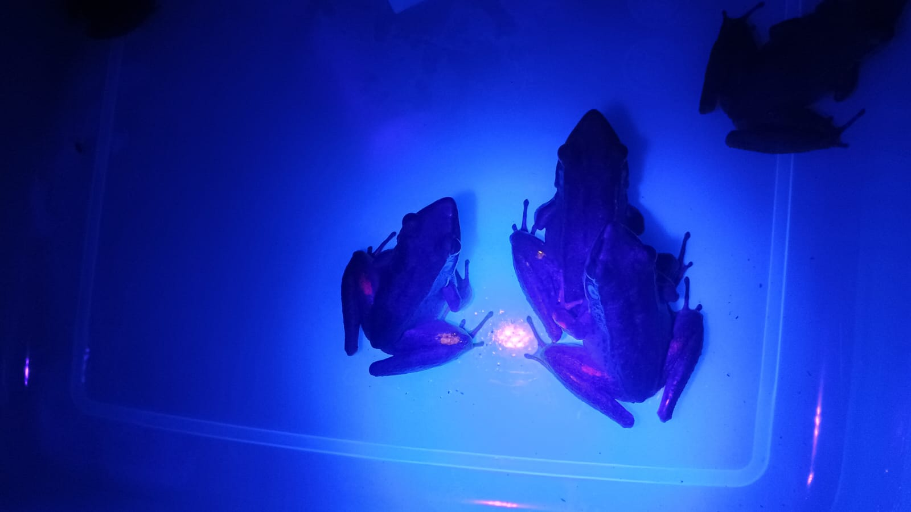
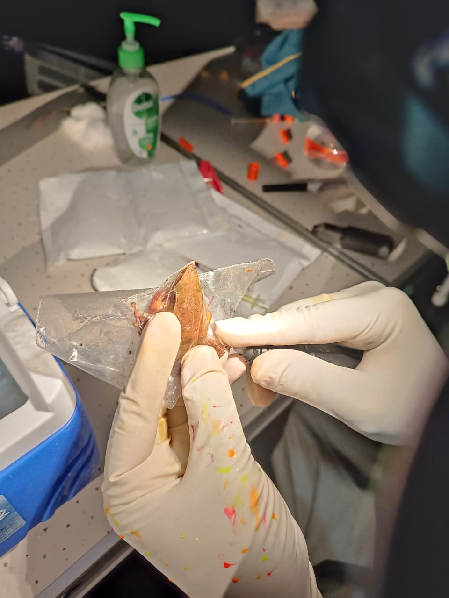
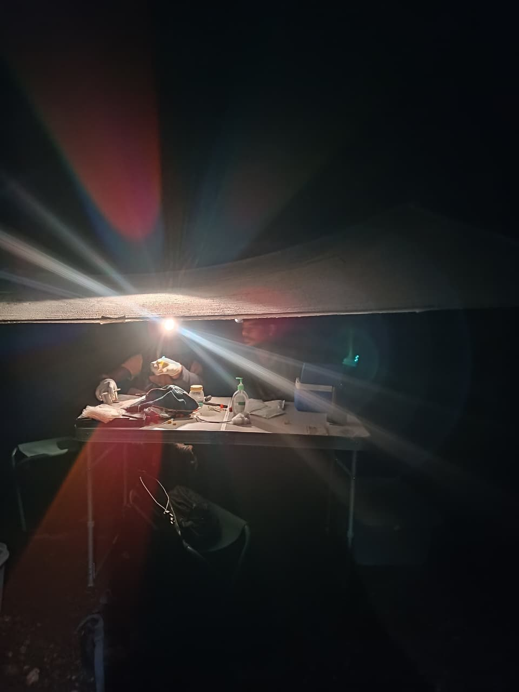
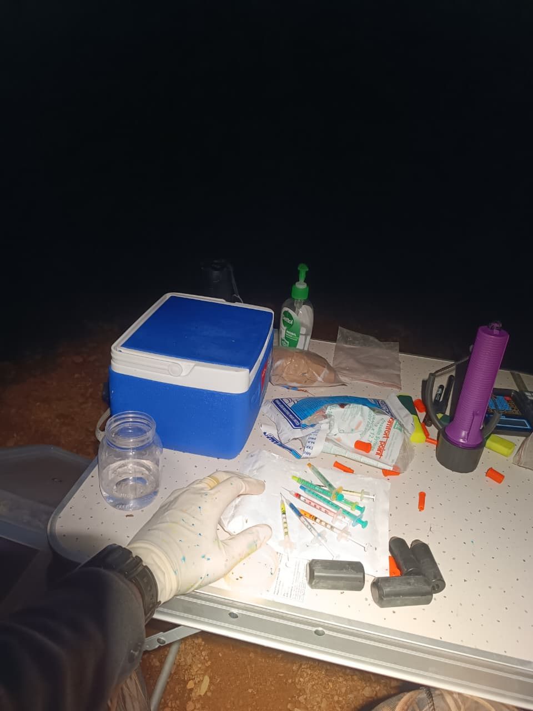
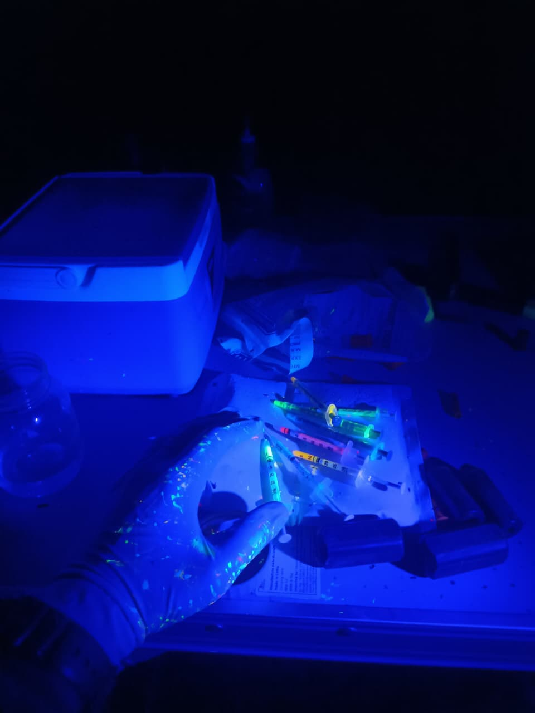
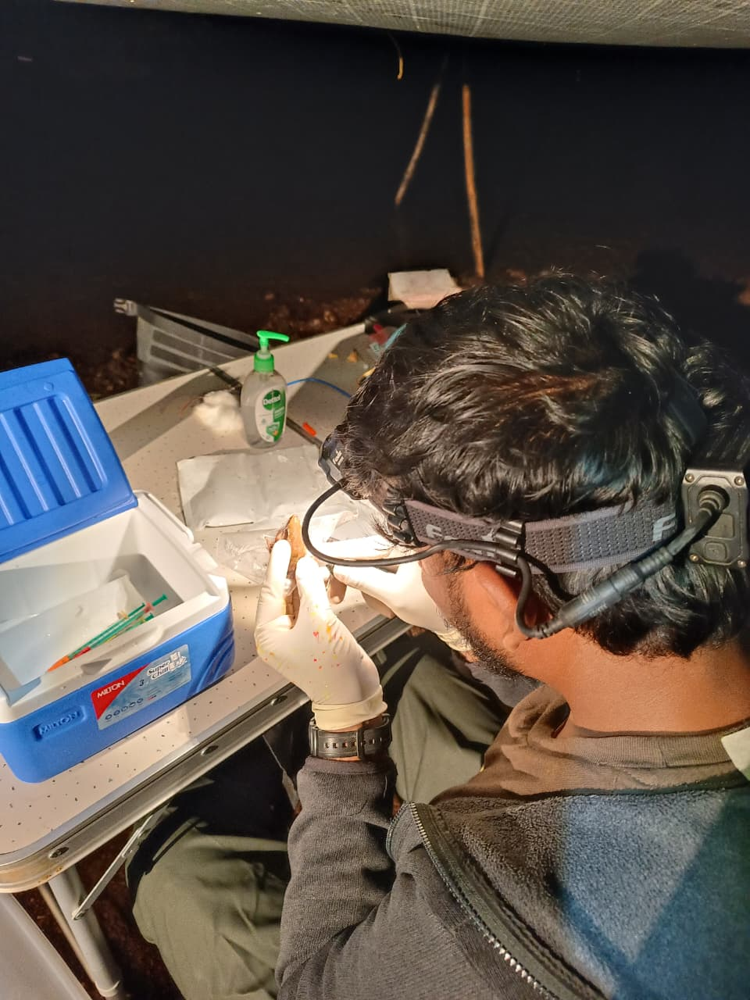
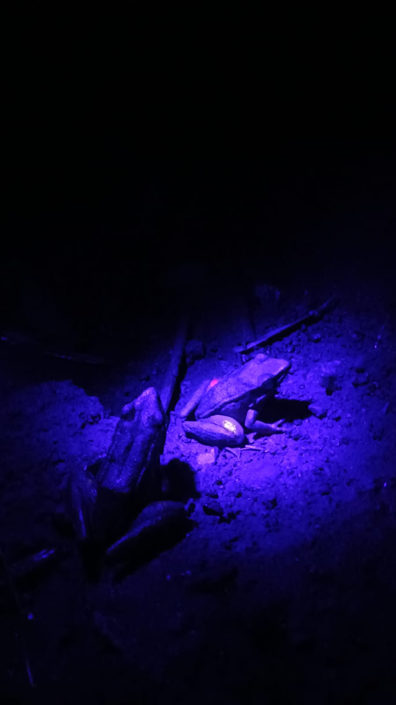

Giving Back to the Field
As field biologists, the reliability of our data hinges entirely on the ethics and precision of our field methods. Visible Implant Elastomer (VIE) tagging is an exceptional tool for marking small, delicate, or nocturnal amphibians, but it comes with a steep learning curve. To save early-career researchers time, minimize material waste, and—most importantly—ensure animal welfare, I have compiled this comprehensive, step-by-step guide based on extensive field experience.

A properly positioned VIE tag reflecting color codes for positive identification. (Photo: Satyam Gupta)🔬 What is VIE & Why Use It?
Visible Implant Elastomer (VIE), developed and manufactured officially by Northwest Marine Technology (NMT), is a medical-grade, two-part silicone-based material. When the elastomer base is mixed with a curing agent, it cures into a flexible, biocompatible, and permanent rubber-like solid. It is injected into animals as a liquid or gel but quickly solidifies into a stable mark underneath transparent or translucent tissue.
✓ Key Technical Attributes
- Biocompatibility: Formulated strictly to be non-toxic and inert (Moffatt, 2013); causing minimal physiological tissue reaction or behavioral alterations when placed correctly (Antwis et al., 2014).
- Fluorescence Under UV Light: Ten colors are available from NMT, six of which are highly fluorescent under UV or deep blue excitation light. This makes it a gold standard for studying cryptic, small-bodied, or nocturnal wildlife.
- An Alternative to Destructive Marking: For decades, amphibian mark-recapture studies relied on toe-clipping or branding. VIE offers a fundamentally less invasive, more ethical, and high-retention alternative—especially for tracking population dynamics, individual home ranges, and calling behavior across metamorphic life stages (Sapsford et al., 2014).

A detailed close-up of a fluorescent VIE tag under the skin. (Photo: Satyam Gupta)Once the elastomer base is mixed with the curing agent, a chemical reaction begins. It will gradually cure into a useless, rubbery solid. In warm or humid tropical field environments, this window shrinks drastically. Every step of your workflow must be designed to maximize your useful application time.
📋 Phase 1: Pre-Field Planning & Experimental Design
1 Master Your Color Combinations & Codes
Before entering the field, construct a precise spreadsheet of unique color combinations based on your available tag colors and chosen body locations (MacNeil et al., 2011).
Fluorescent Colors (UV Reactive)
Non-Fluorescent Colors
- Accounting for 'No Tags': Decide if your matrix will include combinations where a specific body zone is left empty (an "NA" tag). Note: While this increases potential combinations, relying heavily on "NA" can backfire if a true tag is later lost or migrates, causing you to misidentify the individual. It is highly recommended to use actual tags across all chosen body locations whenever possible.
- Avoid UV Ambiguity: Do not use colors that fluoresce identically under field conditions. For instance, Red and Pink look remarkably similar under a UV torch. Avoid using them across your study, or at the very absolute least, never use them on the same individual. Always prioritize distinct, highly fluorescent colors.
- Incorporate Metadata: Always record the exact tagging locations alongside individual morphometric data. If a tag ever becomes ambiguous, this metadata acts as a vital fail-safe to cross-verify the individual's identity (Hohn, 2013).
2 Tailor Tag Locations to Species Behavior & Diel Activity
Choose injection sites that match both how you intend to observe the animal and how it interacts with its environment to minimize predation risks.
- Nocturnal Species (Minimal Disturbance): If you are monitoring nocturnal frogs and want to identify them via capture-mark-recapture without physically handling them every time, choose the upper areas of the thigh and wrist. Because these frogs are active in the dark, this positioning allows you to spot-check their unique codes safely from above using a high-powered UV torch, keeping stress to an absolute minimum.
- Diurnal Species (Camouflage Preservation): For species active during the day, tags should strictly be placed on the ventral surface (the underside). Placing tags on dorsal or highly visible upper surfaces can drastically increase their detectability to visual predators like birds or snakes under daylight, compromising their natural camouflage. Keeping the elastomer on the ventral side ensures they stay protected while resting or moving.
3 Determine Sample Size & Proportions
Plan exactly how many individuals you aim to tag per shift and calculate the proportion of each VIE color color-code required. Pack accordingly to prevent running out of a single color mid-field-session.

Field camp setup for night-time tagging operations. (Photo: Satyam Gupta)⛺ Phase 2: Field Station Setup & Logistics
1 Ergonomics: Do Not Underrate Comfort
Tagging requires extreme precision and can take significantly longer than you anticipate. When you begin, tagging a single individual across 4 locations can easily take 20 to 40 minutes. While experience will eventually drop this down to just 5 minutes, do not lose hope—and do not compromise your body in the meantime.
- The Mobile Lab: Bring a portable trekking table and chair. Attempting to hunch over on the ground for hours will cause intense body aches, severe fatigue, and a drastic drop in your technical productivity and accuracy. Do not take this step lightly.
2 The Gear Checklist
Pack only the raw material needed for a single shift. Keep the elastomer bases, curing agents, and mixed syringes inside an insulated box packed tightly with deep-frozen ice packs to stall the curing process.
- Essential Kit: Mixing syringes, manual elastomer ejector/injector kit, tissue paper, nitrile gloves, medical sanitizers, concentrated alcohol, and heavy-duty zip-lock bags.
- Injectors vs. Manual Syringes: It is highly recommended to purchase the official Northwest Marine Technology VIE Kit along with their dedicated manual elastomer injectors. Attempting to use standard manual syringes for the actual injection reduces accuracy, increases volume inconsistency, and decreases overall efficiency significantly.

A well-organized, ergonomic tagging station in the field. (Photo: Satyam Gupta)🤝 Phase 3: The Sterile Team Workflow
Working with a team is always preferred. Divide responsibilities into a highly coordinated assembly line:

Team members coordinating during the tagging process. (Photo: Satyam Gupta)1 Capture and Housing
- Sterile Zip-Locks: Team members should capture amphibians in individual, sterilized zip-lock bags. Crucial: Prior to the trip, use a standard paper punching machine to puncture the bags at multiple locations to ensure proper ventilation and breathing.
- The Holding Box: Place the individual zip-lock bags into large, sterile plastic boxes with the covers kept partially open.
- Time & Positioning Limits: Never hold an amphibian upside down. Additionally, ensure individuals are not kept in the capture bags for more than 30 minutes before processing to minimize stress and prevent mortality.
- Eco-Friendly Reuse: To remain economical and environmentally conscious, reuse these zip-lock bags for future sessions by washing them thoroughly with soap and sterilizing them completely with alcohol swabs between outings.
💡 Pro-Tip: Direct Syringe Mixing (Zero Material Waste)
The standard kit instructs you to use a toothpick to mix the elastomer and curing agent on a separate surface. Do not do this. It wastes immense time and traps material during the transfer from the surface to a filling syringe, and finally into an insulin syringe.
Instead, follow this direct-loading method:
- Direct Deposit: Deposit the required amount of raw elastomer directly into a large filling syringe.
- Precise Curing Ratio: Add the curing agent at an exact 1:10 ratio directly into the same syringe. This proportion is non-negotiable: increasing the curing agent causes the mix to dry prematurely; decreasing it prevents the elastomer from solidifying properly underneath the amphibian's skin.
- The Copper Wire Method: Insert a thin, long piece of peeled copper wire directly inside the filling syringe barrel and stir thoroughly until completely mixed.
- Direct Transfer: Express the perfectly mixed elastomer directly from the filling syringe into clean, sterile insulin syringes designated for tagging.
- Fresh Batches Only: Always use a brand-new insulin syringe whenever you mix a fresh batch of elastomer. If you accidentally mix an old residual batch with a new batch inside the same syringe, they will cure at different rates, ruining the entire mixture.
🎯 Phase 4: Ethical & Precise Injection Technique

Demonstrating the shallow angle and pocket creation technique during injection. (Photo: Satyam Gupta)1 Processing and Coding
Once the target captures for the night are gathered, match each individual to a pre-determined color code from your matrix sheet. Use a permanent marker to write the assigned color code directly on the individual's zip-lock bag to avoid any potential mix-ups. Carefully record all required morphometric measurements (SVL, weight) before starting.
2 Restraint and Injection Setup
Amphibians must remain completely still during the process to avoid self-injury or a failed mark.
- The Zip-Lock Restraint: Keep the individual inside their ventilated zip-lock bag. Gently guide them into one of the bottom corners of the bag so they are snugly restricted and unable to move.
- You can directly prick and inject the individual through the plastic of the zip-lock bag into the target area to maintain perfect restraint and sterility.
3 The Injection Execution
- Sterilization: Sterilize the injection site, your gloved hands, and the needle apparatus with alcohol before processing every single individual. Always use fresh needles for fresh batches.
- Shallow Angle: Gently prick the skin at your target area (e.g., the wrist). The moment you feel the needle has pierced the translucent skin layer, stop. Do not push deeper into the underlying muscle tissue. Deep injections obscure the elastomer, rendering it faint and virtually unreadable under UV light.
- Create the Pocket: Gently move the tip of the syringe needle in a micro-circular fashion underneath the skin layer to create a tiny pocket of a few millimeters.
- Deposit and Steady: Slowly deposit the elastomer. Do not move the syringe back and forth excessively while injecting. Needle over-movement is the primary cause of unintended tag migration reported in historical literature.
⏱️ Phase 5: Post-Marking Care, Curing, and Monitoring
1 The 15–20 Minute Rule
Do not release the animal immediately. Monitor each individual in a calm, dark container for at least 15 to 20 minutes post-tagging. Releasing them into the wild prematurely increases tag loss and migration due to immediate high-velocity movements and water exposure. This window allows the elastomer to fully solidify and cure inside the skin pocket.
2 Final Sterilization
After the session concludes, sterilize all field equipment, tables, and tools with highly concentrated alcohol to prevent the transmission of wildlife pathogens (such as chytrid fungus) between populations, and wear gloves to prevent spreading diseases between humans and amphibians.

A tagged amphibian safely resting post-injection, ensuring the VIE cures completely before release. (Photo: Satyam Gupta)🔦 Field Identification: Upgrading Your UV Kit
While some commercial VIE kits come with a basic UV light, they often lack the range and output power required for long-term population monitoring in dense field conditions.
| Equipment Type | Recommendation | Why It Matters |
|---|---|---|
| The UV Torch | UVbeast V2 (365nm) | Offers vastly superior range, beam crispness, and power. Essential for spotting tagged individuals from a distance without disturbing them. |
| Eye Safety | UV Protection Goggles | Mandatory. Prolonged exposure to high-output UV beams causes severe eye strain and long-term optical damage. I learned this the hard way—never track fluorescence without eye protection. |
📊 Technical Insights & Best Practices (NMT Specs)
To maximize project success and understand biological limitations when deploying the Official NMT VIE Tracking System, prioritize these fundamental parameters derived from laboratory guidelines and extensive field peer reviews:
- Healing and Tissue Settlement Window: After needle penetration, tissue takes several days to completely close and form a fibrous wall around the setting polymer. It is standard protocol to avoid any physical handling or recapture stress for at least 10 days post-injection. This preserves tag structural orientation and allows micro-wounds to heal cleanly without contamination risks.
- The Mechanics of Tag Migration: Research confirms that if VIE is placed too deep or within spaces near highly active, vascularized tissue, fragments can break apart over time. In severe cases, microscopic pieces can slowly accumulate in filtering organs like the kidneys, inciting minor local granulomatous inflammation. Ensuring a strictly subcutaneous placement parallel to the skin layer keeps the tag completely superficial and away from systemic pathways (Cabot et al., 2021).
- Metamorphic Success Rate: If you are managing life-history studies spanning from early larval stages to adulthood, be prepared for shifting observation probabilities. While larval tagging (even in tiny specimens under 0.2g) yields high detection rates (~81%) during the first month, rapid cellular shifting during metamorphosis can obscure or scatter older tags. A localized pilot trial is essential to map retention curves across your target species' life transitions (Fouilloux et al., 2020).
📈 A Note on Scaling Up
Before launching a massive field campaign, always conduct a localized pilot study.
- Use the absolute minimum number of individuals required, determined strictly by a statistical power analysis and preliminary pilot data.
- Practice before live subjects: If you are new to the technique, practice your mixing, volume control, and depth delivery on silicone pads or opportunistic dead museum specimens before working with live, wild populations.